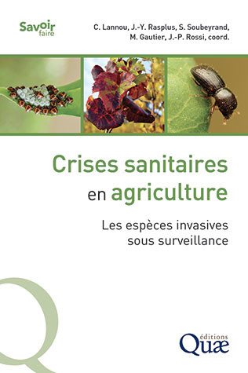
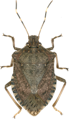
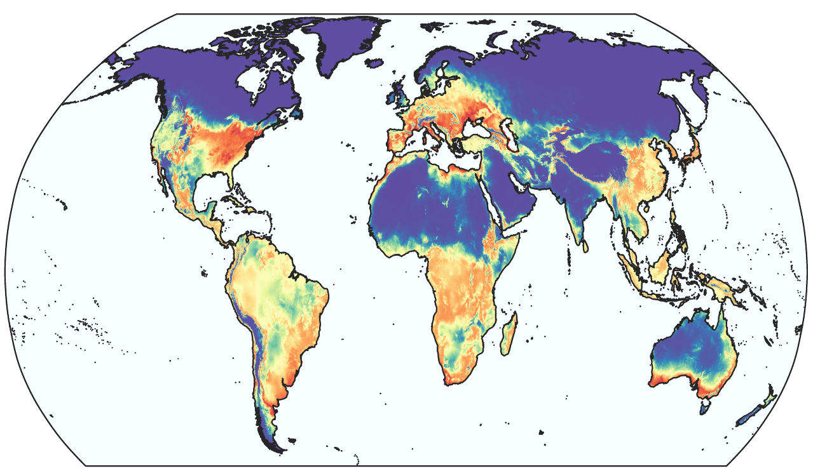
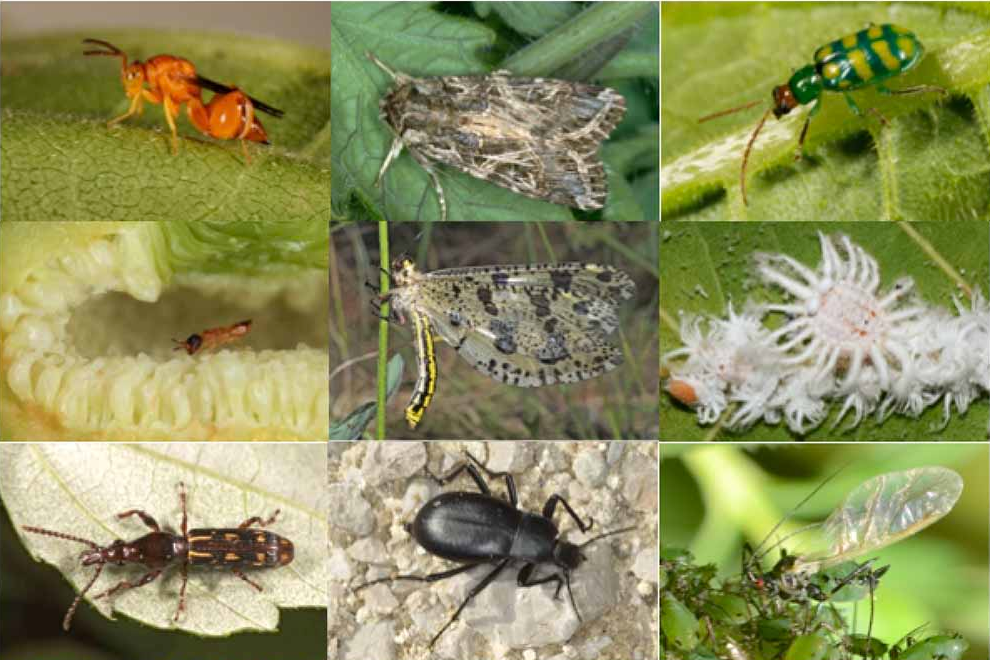
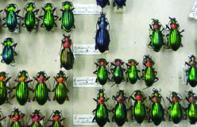
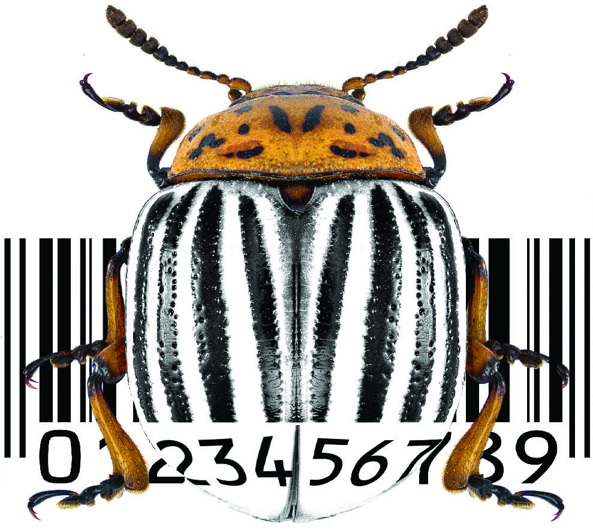
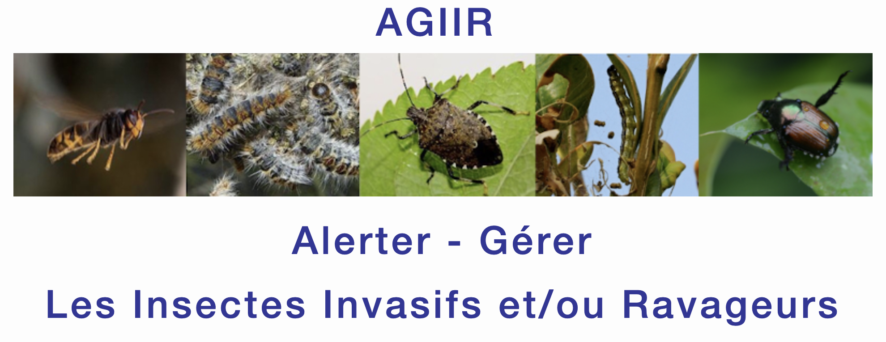
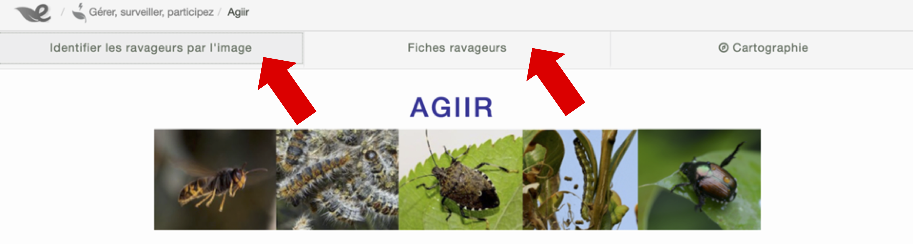
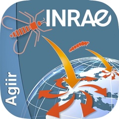

Collectif de recherche
CRISE : Collectif arthropodes Ravageurs et rIsque phytoSanitairE
Homère
Gonzague Saint-Bris
De nombreux organismes sont responsables de dégâts sur les plantes cultivées ou les forêts. Ils consomment les feuilles, attaquent les racines, piquent les plantes et peuvent également transmettre des maladies. Dans certains cas, ces dégâts ont d’énormes conséquences écologiques, économiques ou les deux. Nous étudions certaines de ces espèces et portons un intérêt particulier aux organismes exotiques envahissants. Une invasion biologique est difficile à anticiper et dans la majorité des cas, les autorités sanitaires sont prises au dépourvu lorsque l’on s’aperçoit qu’une espèce inconnue jusqu’alors est arrivée, a réussi à s’installer et commence à poser des problèmes.

Si l’impact de l’espèce est important ou menace de le devenir, on entre dans ce que l’on appelle une crise sanitaire. Dans le monde de la santé des plantes, la découverte de la bactérie Xylella fastidiosa en Italie en 2013 puis en France en 2015 a provoqué une crise importante à l’échelle Européenne. Le lecteur pourra consulter l’ouvrage intitulé « Crises sanitaires en agriculture : Les espèces invasives sous surveillance » publié aux éditions Quae dans lequel le sujet est traité en profondeur. S’il est difficile d’identifier à l’avance les espèces d’arthropodes ou de pathogènes qui seront demain les agents déclencheurs de crises sanitaires, on peut néanmoins se préparer à l’arrivée probable des espèces qui posent déjà d’importants problèmes dans d’autres régions du monde. C’est ce que l’on appelle en Anglais la preparedness et en français la préparation au pire. Elle revêt différents aspects et inclut des composantes sociologiques, organisationnelles, éducatives, politiques et évidemment biologiques. L’anticipation et la préparation aux crises sanitaires sont des éléments clefs d’une gestion efficace de la santé des plantes.
Dans ce contexte, quel est le rôle des biologistes ? Notre collectif [Jean-Claude STREITO, Eric PIERRE, Guénaëlle GENSON et moi-même] développe des connaissances biologiques et systématiques (taxonomiques) sur différents groupes d’insectes ravageurs. Gérer une espèce d’importance agronomique c’est tout d’abord être en mesure de l’identifier correctement ! Cette tâche est difficile lorsque l’on a affaire à des espèces exotiques non présentes en France. En cas d’invasion biologique, la détection précoce est importante car l’éradication des espèces envahissantes n’a de chance d’être menée à bien qu’à la condition de réagir très rapidement, avant que des populations importantes ne se développent. De ce point de vue, la préparation repose sur des collections de spécimens bien organisées, des fiches de reconnaissance claires destinées aux autorités phytosanitaires ainsi que des bases de données génétiques de type barcode qui permettent l’identification des spécimens sur des bases moléculaires. Ce dernier aspect est très important car il permet l’identification par des personnes non spécialisées dans la taxonomie du groupe zoologique considéré et offre également l’avantage de pouvoir traiter des larves ou même des œufs qui sont des formes pour lesquelles l’identification sur des critères morphologiques est souvent impossible.

La punaise diabolique
Halyomorpha halys
Lorsqu’une invasion biologique se produit, il est important de suivre l’évolution de la situation et d’être en mesure de faire le point sur l’expansion de la distribution géographique. Connaître la distribution géographique permet de mettre en place des campagnes d’information et de prendre des mesures permettant de contrôler l’espèce. Les sciences participatives jouent alors un rôle très intéressant. Si l’espèce considérée est aisément reconnaissable sur la base de photographies, un citoyen peut signaler sa présence à un endroit donné et ce signalement peut ensuite être validé par un spécialiste. L’information devient alors utilisable pour les scientifiques et les gestionnaires. Nous nous intéressons aux sciences participatives dans le cadre des invasions biologiques depuis plusieurs années et avons développé différentes applications smartphone et outils dédiés sur la plateforme INRAE AGIIR permettant de signaler des espèces envahissantes comme la punaise diabolique Halyomorpha halys). La détection précoce de nouveaux envahisseurs peut bénéficier des sciences participatives et c’est pour cette raison que nous avons préparé des outils pour plusieurs insectes non présents en France mais représentant une menace sérieuse. C’est le cas du fulgore tacheté Lycorma delicatula ainsi que du scarabée japonais (Popillia japonica) ou le longicorne à col rouge (Aromia bungii).

Être en mesure d’identifier rapidement et de façon fiable les espèces envahissantes et pouvoir suivre les invasions biologiques sont des éléments importants de la préparation aux crises sanitaires. Ces outils peuvent être complétés par les apports de la modélisation des aires de distribution. Il s’agit de modèles statistiques permettant de relier des données environnementales telles que des données climatiques aux occurrences des espèces que nous étudions. De tels modèles permettent d’identifier les aires géographiques pour lesquelles le climat est propice à telle ou telle espèce de ravageur, même si celle-ci n’est pas présente en Europe. On comprend l’intérêt de ces modèles pour organiser la surveillance du territoire et identifier les régions particulièrement menacées. Si l’on utilise les modèles établis sur la base des données climatiques actuelles avec des données reflétant les climats du futur, il devient possible d’anticiper l’évolution des zones menacées et donc ce que l’on appelle la géographie du risque.
Le Collectif arthropodes Ravageurs et rIsque phytoSanitairE aborde ces questions pour certains modèles biologiques d’importance agronomique. Nous utilisons des sciences participatives, maintenons la base de données Arthemis DB@se qui rassemble des données sur des centaines d’espèces de ravageurs et développons des modèles d’aire de distribution permettant d’évaluer l’expansion possible des espèces envahissantes.
La base de données Arthemis
Arthemis DB@se est une base de données en ligne qui livre de l’information taxinomique, biologique, écologique, géographique et génétique facilitant la caractérisation d’une grande diversité arthropodes d’intérêts environnemental et économique à travers le monde.

Arthemis a été créée en 2010 par 2 chercheurs du CBGP (Jean-Yves Rasplus & Astrid Cruaud) sous le nom de QBANK pour encadrer le projet QBOL (Quarantine Barcoding of Life) [CBGP / URZF / Pays-Bas], projet axé sur la caractérisation génétique des organismes de quarantaine pour l’Europe grâce la constitution d’une banque ADN diagnostic de référence. La base de données et son site web QBANK sont hébergés et gérés par l’OEPP / EPPO depuis 2019 : le CBGP en est toujours le curateur sous la responsabilité de Jean-Claude STREITO et Eric PIERRE pour le volet Arthropodes (EPPO Qbank Arthropods). Entre temps, Arthemis DB@se est devenue l’interface web du CBGP en juin 2015 : elle intègre aujourd’hui les données des nombreux projets de l’Unité portant sur les arthropodes (y compris celles de QBANK), ainsi que des données mutualisées avec d’autres Unités de Recherches (UMR PVBMT La Réunion).

Arthemis héberge entre autres les données :
des espèces nuisibles aux plantes cultivées, aux forêts et aux denrées stockées parmi lesquelles figurent de nombreuses espèces envahissantes et de quarantaine pour l’Europe ;
des prédateurs et parasitoïdes naturels des ravageurs dont un certain nombre utilisé ou potentiellement candidat en lutte biologique ;
des espèces d’intérêt patrimonial dont la conservation est préoccupante et menacée pour lesquelles des mesures de protection doivent être prises.
Arthemis est à la fois une plateforme locale de gestion des spécimens de collections déposées au CBGP et une interface web libre proposant des outils de diagnostic principalement destinés aux professionnels de l’Agriculture et aux scientifiques. L’interface propose notamment :
un outil d’identification moléculaire des espèces permettant de comparer la séquence d’un fragment d’ADN mitochondrial (barcoding, principalement le gène COI) à notre librairie de référence constituée et validée par le CBGP, avec l’appui de tout un réseau d’experts nationaux et internationaux (entomologistes, acarologues, généticiens et bio-informaticiens) ;
des fiches didactiques documentées et illustrées pour un certain nombre d’espèces permettant de les reconnaître au champ et au laboratoire.

Arthemis joue un rôle important dans l’épidémiosurveillance des organismes émergeants en proposant des outils facilitant l’identification d’organismes clefs dans certaines crises sanitaires. On pense à l’arrivée de la bactérie Xylella fastiosa en Europe : La détection précoce des vecteurs (insectes hémiptères) capables de transmettre la maladie et la gestion pluriannuelle des échantillons en base de données à l’échelle d’un territoire ont contribué à affiner la modélisation et la prédiction de la propagation de la maladie en France et en Europe (voir diaporama ci-dessous). Enfin, les outils de recherches et les requêtes exécutables en ligne que la base peut générer permettent de dresser des listes d’espèces et de consulter divers niveaux d’information à tout moment.
⚠️ Arthemis est en constante évolution et fait l’objet d’une veille scientifique et technique quasi quotidienne : elle est régulièrement implémentée d’informations nouvelles visant à combler les lacunes, à rectifier les erreurs et à fournir des informations pertinentes et fiables pour améliorer la caractérisation des espèces d’intérêt agronomique.
AGIIR
Agiir est un système d’application pour smartphone hébergée sur le site Ephytia d’INRAE, dédiée au recueil d’observations d’espèces envahissantes ou en expansion par le grand public, tant citoyens novices que naturalistes. Vous pouvez télécharger l’application nomade sur App Store et Google Play. Le principe du partage d’observations est simple et consiste à envoyer par l’application un court formulaire indiquant la date et le lieu de l’observation (géoréférencé) et une photographie du spécimen observé. Ephytia et Agiir ont été conçu par Dominique Blancard et le développement informatique des applications dédiées aux espèces que nous étudions a été réalisé par Dominique Blancard, Jean‑Marc Armand et Jonathan Gaudin.

Toutes les photos sont vérifiées et les spécimens identifiés par les experts taxonomistes de notre équipe. Ces données fournissent aux chercheurs des informations cruciales pour détecter les espèces envahissantes nouvellement arrivées et analyser leur éventuelle expansion géographique. Impliquer le public dans la détection précoce d’une espèce permet de communiquer auprès des citoyens et les sensibiliser aux problèmes liés aux invasions biologiques. C’est également une façon d’améliorer nos chances de détecter précocement de nouvelles espèces dangereuses et permettre aux pouvoir publics de mettre en place des mesures efficaces pour limiter les invasions, ou atténuer leurs conséquences néfastes.

L’application Agiir comporte 2 volets : le premier fournit une fiche descriptive de l’espèce cible avec des éléments de biologie (régime alimentaire, cycle de vie, moyens de lutte s’il en existe) ainsi que des planches pour indiquer comment la reconnaître (critères de reconnaissance et de différentiation par rapport aux autres espèces communes ressemblantes). Le second volet permet à l’utilisateur de déclarer la présence de l’espèce par le moyen d’un formulaire succinct accompagné d’une photo.

Nous suivons actuellement 4 espèces grâce à cet outil : Halyomorpha halys, la punaise diabolique (depuis 2012), Popillia japonica, le scarabée japonais (depuis 2021), Aromia bungii, le longicorne à col rouge et Lycorma delicatula, le fulgore tacheté (depuis 2022). La punaise diabolique a déjà envahi la majorité du territoire français métropolitain, le scarabée japonais et le longicorne à col rouge sont présents à nos frontières, et enfin le fulgore tacheté est absent d’Europe mais a envahi l’Amérique du nord ces dernières années et nos modèles d’aire de distribution indiquent que le climat européen lui est favorable. Des fiches “espèces” détaillées sont diponibles dans le menu “Galerie” de ce site.
Lien vers la page de l’application Agiir : https://ephytia.inrae.fr/fr/P/128/Agiir
Références
Lannou, C., Rasplus, J.-Y., Soubeyrand, S., Gautier, M., Rossi, J.-P., 2023. Crises sanitaires en agriculture : Les espèces invasives sous surveillance. Editions Quae.
Jean-Pierre Rossi, 30 April, 2025